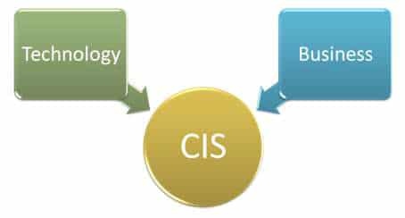
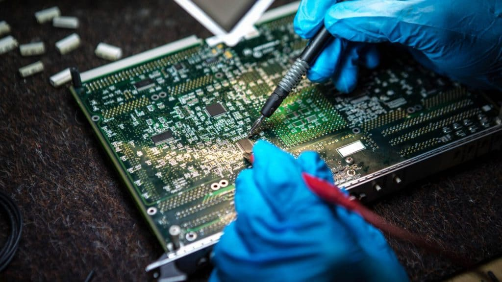

The Computer Information Systems (CIS) major will change with time. It is dependent on the current world of technology where if you do not study current trends/software you will fall behind. If you are going to study a technical field which should you choose? What is the difference between Computer Information Systems, Computer Science, Computer Engineering & Cyber security? I will help define these subjects so it is easier for you to make a decision between them or none at all.
My experience in this major
When I entered the Texas A&M education system there was an expectation to learn programming and even circuitry. For me there was a belief that Computer Information Systems meant the creation of desktop computers and their software. The major turned out to be much simpler than that.
There was no hardware creation or maintenance, heck there is hardly any programming either. Half the classes were from the Bachelor of Business Administration. To my surprise we learned a lot of different software used in administration of business. There was no solid focus on programming languages. Programming is not seen as the core of the major. Instead the idea of CIS at my university was to learn to use software as leverage for profit in a business.
Programming as part of the trade was incidental. The CIS major at my university was designed for managers in tech companies and not programmers. Many of the courses took us through a shallow tour of each field of work. Databases, programming fundamentals, Java, a few programming libraries, loads of software learning, loads of conceptual classes and of course business administration classes.
Computer Information Systems vs Computer Science
If I were to parallel these two majors for you I would say Computer Science (CS) is like biology and CIS is like public health. Public health includes touching at every field of health to create a composite education where you know how each field pieces together to create opportunities for the public to become healthier.
Point being, CIS is much broader than Computer Science. CS is a subset of the major like biology is a subset of public health. The narrow focus of Computer Science is "how do computers work"? The broad focus of Computer Information Systems is "how do I use computers in business"? The sales pitch of the major creators is to say everything is a business and technology is essential to business therefore we should create a curriculum to learn technology for business called CIS.
Computer Information Systems vs Computer Engineering
Computer Engineering (CE) is hard, end of story. I am half kidding but really, Computer Engineering requires more math than even Computer Science. CE is the creation of computers in general. You have to learn hardware architecture, software engineering, algorithms, databases & the physics behind circuitry.
It is designing, creating and maintaining computers of all sorts from refrigerators to Apple watches. If you're smart and you know it you can major in CE. This was my first major in college and I dropped out. Reason being I skimmed through the fundamentals of Calculus and Physics for health reasons in my courses, thinking I was probably not going to use it. In reality these courses were used heavily in the later parts of Computer Engineering so I failed to equip myself properly for the rest of the major.
The switch to Computer Information Systems was easy in comparison. Each topic in the major is a self-contained unit. The courses do not stack so heavily on the previous classes like the CE major. For many of the courses it is okay to skim for an A rather than learn deep at pretty much everything. There is simply way less math and it is more okay to get a CIS major just for the degree.
Computer Information Systems vs Cyber Security
Cyber Security as a curriculum simply has a different focus than CIS. Just like Computer Science, Cyber Security is a subset of CIS. There is a focus to go deeper into how the internet works, how signals are processed between two endpoints, how data is processed/preprocessed at each point/node/computer and how to disrupt or protect this signal. Encryption, computer networks & hacking are important elements to Cyber Security which within the CIS major there is no deeper exploration.
The essentials are different, instead of learning management you learn social engineering. Which means extracting critical data from people. Manipulation of human relationships is a major part of breaching a secure network/system. It is not like the movies where some hacker has all the resources contained in his skill set. Unethical hacking as I was taught includes soft skills where you extract data from conversations with people. To secure a system you must be taught how the unethical world of hacking really occurs.
In other words, most computer systems are secure but real people generally are not. People are more trusting than a computer system and this can get you into some real trouble. To major in cyber security is to focus on these things instead of how to run a business using technology.
Should you choose this major?
Let's say you want to get into learning about technology for your business or someone else's. Let's say you don't want to get deep into mathematics or programming. Lastly, let us say you want to manage people in any company that uses software/hardware. If this is the case CIS may be for you.
But if you would rather learn to create software, learn deep into circuitry, avoid business books/essays or go deep into any technical field then this major may not be for you. The broad scope of CIS does not allow any narrow focus throughout the major. It is not a particularly hard degree and you can stop right after the bachelors and attempt to get any management position.
I chose this major for these reasons. Also, I did not feel sharp enough to survive the Computer Science major so I chose CIS. Now, after 4 years of being a CIS major I am more inclined to the challenge of CS and at this moment I am preparing to major in CS at my university once I finish the degree.
Want to learn more about the tech industry? Check out my review on Swipe To Unlock!